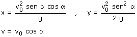
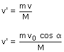
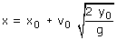
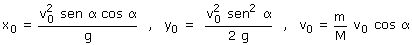
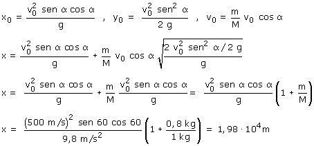

1ª parte Calculamos la posición de la granada y su velocidad cuando llega a la máxima altura  Parámetros: v0 = 500 m/s, α = 60º 2ª parte La granada moviéndose horizontalmente con velocidad v = v0·cos α explota rompiéndose en dos fragmentos. Calculamos la velocidad del fragmento de 0.8 kg tras la explosión  Datos: M = 1 kg, m = 0.8 kg 3ª parte Calculamos donde llega al suelo el fragmento de 0.8 kg  Parámetros:  Sustituyendo valores resulta:  |